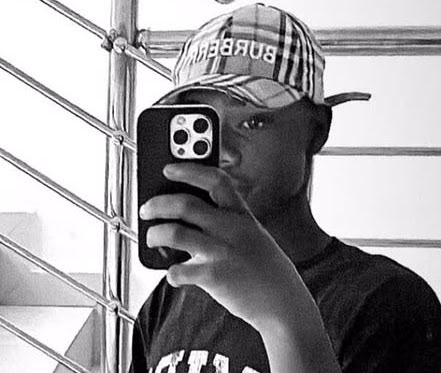

Christian | Funny | Music Lover | Passionate Developer with Big Ambitions
Daniel is a virgo who loves details, a Christian who loves God, and someone who loves bringing positive energy to every room. I'm building a strong foundation in web development, driven by curiosity and problem-solving. I believe creativity and attention to detail are my greatest strengths.
I didn't start coding just to build websites. I started to build a future.
"For I know the thoughts that i think towards you, saith the LORD, thoughts of peace, and not of evil, to give you an expected end."- Jeremiah 29:11.
This Keeps Me Going